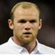
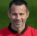

曼彻斯特联


曼彻斯特联足球俱乐部位于英国英格兰西北区曼彻斯特郡曼彻斯特市，英文名Manchester United Football Club，简称ManUtd或MUFC，中文简称曼联，其前身“牛顿·希斯”于1878年由兰开夏郡和约克郡铁路公司的工人在牛顿希斯工地上成立。1902年球队改组并改名曼联，现为英格兰足球超级联赛俱乐部，曼联的球队主场为“梦剧场”老特拉福德球场，1910年启用至今。
曼联是英格兰足球史上最为成功的俱乐部之一，也是欧洲乃至世界最具有影响力最成功的的球队之一，共获得20次英格兰顶级联赛冠军，12次英格兰足总杯冠军，4次英格兰联赛杯冠军（除英格兰联赛杯外均为最高纪录）。在欧洲赛场上，曼联共获得3次欧洲冠军联赛冠军，1次欧洲优胜者杯和1次欧洲超级杯冠军。
2016年5月27日，曼联官方宣布葡萄牙主教练何塞·穆里尼奥将入主老特拉福德，他将成为弗格森爵士退休后曼联所任命的第三任主教练。